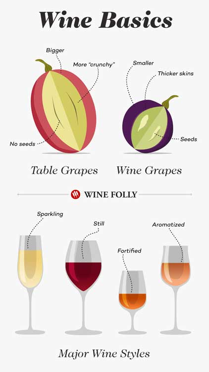

Beginner's Guide to Wine Whether you're just getting started with wine or work in the industry, this page contains many useful resources that will round out your wine knowledge. Let's get started! |
|
|  | Wine Basics Most wine is made with grapes, but they're not like the ones you find in the grocery store. Wine grapes (latin name: Vitis vinifera) are smaller, sweeter, have thick skins, and contain seeds. There are over 1,300 wine grape varieties used in commercial production but only about 100 of these varieties make up 75% of the world's vineyards. Today, the most planted wine grape in the world is Cabernet Sauvignon ("cab-err-nay saw-vin-yon"). Find out more about the basics of wine (and which ones to try) in the following sections: |
| Serving Wine and Choosing Glassware Wine is a peculiar beverage. It's handy to know the best practices for serving, handling and storing wine – including choosing the right glasses for your occasion. |